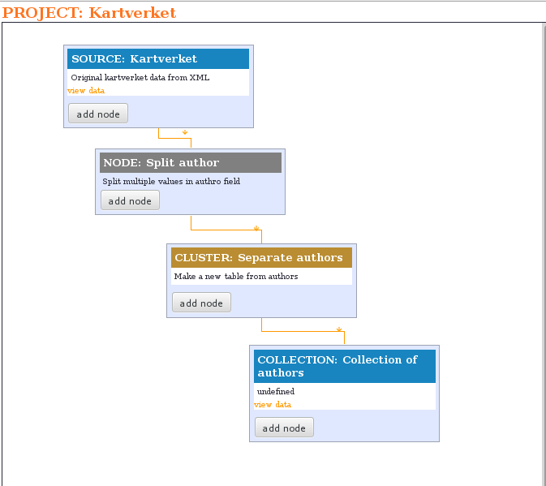

This is a very new project by Wikimedia Finland and no code is yet available. Things are changing and different routes are followed. However, this page tries to show the main ideas. Any feedback is welcome (ari.hayrinen@gmail.com).
Purpose
The main purpose of Metapipe is to provide method for data manipulation and conversion, both scripted and manual ways.
Metapipe uses nodes for graphical user interface. With nodes it is possible to make "easy to follow" structure for all editing that is needed for a dataset.
Projects can be shared, so that users can examine and adapt each others workflow and code.
How it works?
Basic work flow
Let's say you have a Excel-sheet of data. You then export it to csv format. Next you import it to MetaPipe. There you can view your data again in sheet format.
Then you can start editing. Let's say you have an author field with multiple person names in it. You can add a Transform node called Split, which splits values. Note that you do not edit the original data, but Split creates a new field. You can view the result and edit it manuallly if necessary.
Next you want to list all your authors. You create a Cluster node that uses the field that you just created with Split. This create a new collection (or table if you wish) that holds all unique author names from your data.
Now, if your data is intended for wikidata or commons, then it would be nice to have identifiers for persons. You can add a Wikidata lookup node. With that you can search wikidata with your author collection. Lookup results are saved to to your author collection.
Finally, you can use (Filter?, Transform?) to create a new field with author name and wikidata link. Then you export whatever format you need. Done!
Documented workflow
The very point of MetaPipe is that it can be used for manipulation but that it - at the same time - documents what you have done with your data. This documentation can be then shared, so that others does not have reinvent the same workflow.
Documentation is saved to a MetaPipe file. By sharing this file, you can show exactly how you edited data. Others can then "fork" your project and use it as a starting point for their conversion of similar data.
Nodes
List of node types
- Source
- Transform
- Cluster
- Lookup
- Map
- Export
With source node you can import your data to metapipe. Your data can be in file (xml, csv, tsv or json) or data can be imported from API.
Transform node is used to modifying fields in your data. Typical modifications are trimming spaces, splitting values, changing case and so on.
Cluster node allows you to create a new collection from unique values of certain fields. For example, if you have an author field in your and you would like to have a list of all authors, you can use cluster.
Lookup node can be used for combining data from different sources. Source can be a collection in Metapipe or a web resource like Wikidata or VIAF.org
With map node you can rename and combine your fields.
Export node transforms data to a certain format, like XML or JSON. Usually there is a map node before export node.
Node structure
Basically all nodes are just javascript functions that are applied for each document. User can edit function.
Node has also a view that defines how data is displayed. User can edit view and user can edit data displayed by the view.

Technology
Metapipe is a node.js application and it uses MongoDB for data storage (without MongoDB this would be a really pain in the **s). It can be run locally (see installation) or it can be used as a web service.
But it really isn't a pipe, isn't it?
Well, MetaPipe is really not a pipe or a dataflow tool (i.e. data flowing from one node to next). Instead, MetaPipe nodes are run once and result is saved to the database and after that next node can be run. The reason for this is the importance of ability to hand edit data in any phase. That would be very difficult task in dataflow-based application.